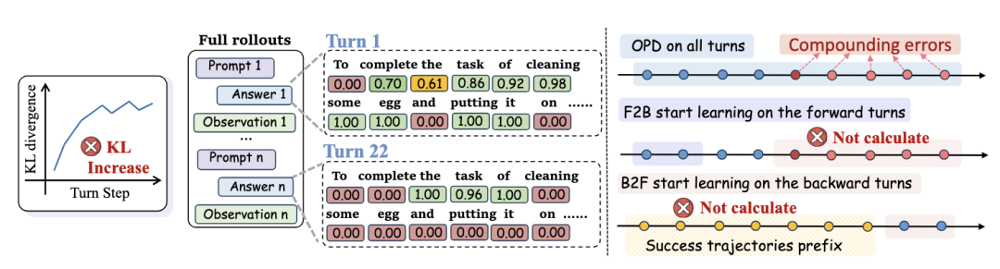
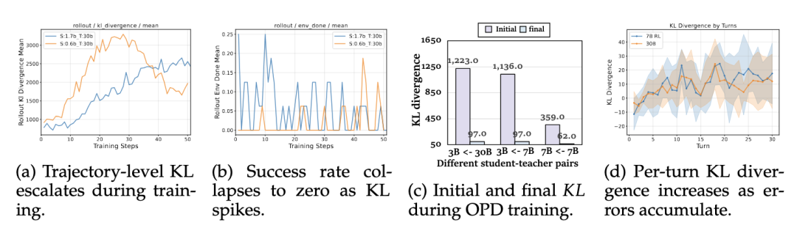
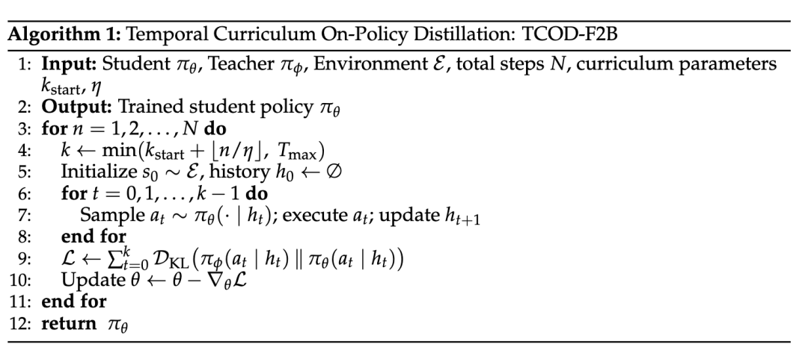
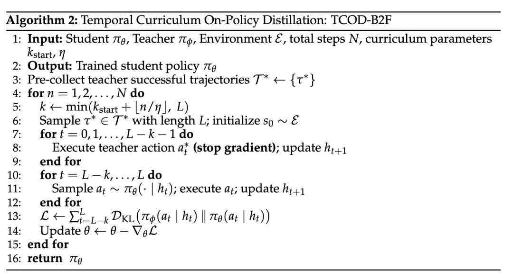
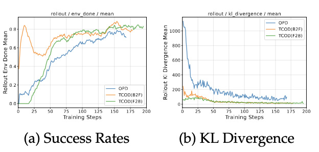
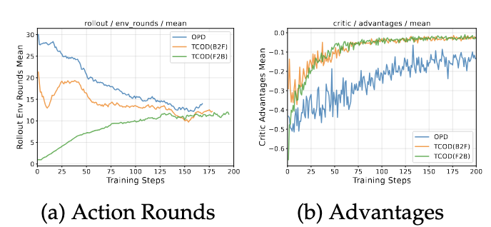
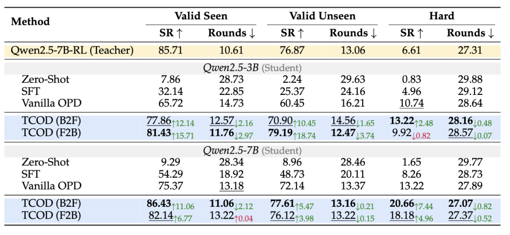

TCOD团队 投稿 凹非寺
量子位 | 公众号 QbitAI
把强大模型的能力“蒸馏”给小模型，听起来很美——
但放到多轮对话Agent场景里，效果往往一塌糊涂。
为什么？
香港中文大学联合阿里通义事业群给出了答案，并提出了一种名为TCOD（Temporal Curriculum On-Policy Distillation）的训练方法。

上图（左）表示在多轮Agent的OPD训练中，随着交互轮次的增加，教师模型对学生生成回复中各token的概率分配持续降低，表明每轮的 KL 散度不断攀升，最终导致监督信号失效。（右）表示原始OPD使用完整轨迹进行训练，因此包含了所有累积的误差；而TCOD-F2B/B2F则通过课程学习，从短轨迹逐步扩展至长轨迹，有效规避了误差轮次的干扰。）
团队发现失效的根本原因在于轨迹级KL不稳定性，每一轮误差不断累积，把学生模型推到老师模型从未见过的状态区域，老师的监督信号因此彻底失效。
而TCOD用课程学习的思路，让学生模型从短轨迹开始、循序渐进地学习完整轨迹，一举解决了多轮Agent蒸馏的稳定性难题。
TCOD只需对现有OPD代码做极少改动
On-Policy Distillation（OPD）已经在SFT和RL之后，成为了第三种有效的post-training训练方式。
然而OPD虽然在数学推理等单轮任务上很好用，但放到ALFWorld、WebShop这类多轮交互任务里，直接翻车：
小模型：KL散度飙升 + 成功率崩塌到接近0 大一点的模型：虽然最终收敛，但初始KL极高，训练极不稳定

(ALFWorld上不同师生模型组合的轨迹级KL分析。(a)(b) 显示，在整个训练过程中KL散度持续攀升，同时任务完成率出现崩塌。(c) 展示了OPD训练中初始KL与收敛后KL之间的巨大差距。(d) 揭示了背后的根本原因：KL散度随交互轮次的增加而增大，表明误差沿轨迹方向不断累积放大。)
那TCOD是怎么解决的呢？
核心思路很简单：别一开始就让学生独立走完整条轨迹，用课程学习，从短到长慢慢来。
具体有两种变体：
F2B（前向到后向）：先让学生负责前几步，再逐步接管后续步骤

B2F（后向到前向）：先让老师引导到接近终点的状态，学生只负责最后几步，再逐渐向前延伸

两种方式只需对现有OPD代码做极少改动。
KL崩溃被彻底压制，小模型直接“满血复活”
团队在三个难度递增的多轮Agent基准上验证了TCOD的效果，包括ALFWorld（具身导航）、WebShop（电商购物）以及ScienceWorld（科学推理）。
在这些基准上，TCOD成功率最高提升了18个百分点，同时把平均行动步数也一并压了下来。
最值得关注的，是小模型的“死而复生”。
以Qwen3-1.7B为例，用Vanilla OPD训练后，模型在三个基准上的平均成功率仅有0.17%。
这几乎是完全崩溃、毫无可用性。
但换上TCOD之后，同一个1.7B小模型的平均成功率直接拉升至18%以上，提升幅度超过18个百分点。
这意味着，TCOD把一个“废了”的模型重新训活了。
对于更大的模型，TCOD则是锦上添花。
以Qwen2.5-3B学生模型为例，在ALFWorld的Valid Unseen测试集上，Vanilla OPD成功率为60.45%，而TCOD-F2B的成功率为79.19%，提升了18.74个点。
不仅如此，TCOD还把完成任务所需的平均行动步数压缩了2.97步，推理效率和任务性能同步提升。

△TCOD与OPD在ALFWorld上的训练动态对比
上图(a)(b) 分别展示了以Qwen2.5-7B为学生模型，Qwen2.5-7B-RL之后的作为teacher模型时的成功率与KL散度变化曲线。TCOD在整个训练过程中始终保持更高的成功率，同时KL散度也更加平稳可控。

△TCOD与OPD在ALFWorld上的训练动态对比
上图(a)(b)分别展示了以Qwen2.5-7B为学生模型，Qwen2.5-7B-RL之后的作为teacher模型时的训练过程中的平均行动步数与优势函数的变化曲线。
研究人员还专门构建了一个Hard测试集——
121个教师模型pass@10采样全部失败的任务，教师自身成功率仅6.61%。
结果，Qwen2.5-7B学生模型在TCOD-B2F的训练下，Hard集成功率达到20.66%，比教师高出整整14个点。
让模型学会”从短到长、循序渐进”地走轨迹，不仅能学会老师会的，还能泛化到老师根本不会的任务。

△TCOD与OPD在ALFWorld上的域外泛化及困难集性能对比
另外，研究人员还测试了训练效率。
TCOD-F2B和B2F比Vanilla OPD减少了约32%的总训练时间。
原因也很直接：课程学习早期只走短轨迹，rollout更短、数据收集更快，省下来的计算量相当可观。
团队还进一步验证了超参鲁棒性，发现课程扩展速率η在{2,4,6}之间变动，成功率波动不超过2%，几乎不需要调参就能直接用。
TCOD展现出的这种“循序渐进”模式，让AI更接近人类学习的方式。
也就是先在简单场景里站稳脚跟，再逐步挑战复杂任务，而不是一开始就被扔进深水区。
未来，这类时序课程机制很可能成为训练长程Agent的标配组件。
论文：https://arxiv.org/pdf/2604.24005
GitHub：https://github.com/kokolerk/TCOD
ModelScope：https://modelscope.cn/collections/wjqkoko/TCOD
Hugging Face：https://huggingface.co/collections/kolerk/tcod
一键三连「点赞」「转发」「小心心」
欢迎在评论区留下你的想法！
— 完 —
我们正在招聘一名眼疾手快、关注AI的学术编辑实习生 🎓
🌟 点亮星标 🌟